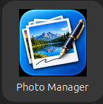

On Ubuntu, open the applications search and search for Photo Manager. Select the Photo Manager icon to launch the application.

A workspace is the folder where Photo Manager looks for its projects. If no workspace has been configured, Photo Manager displays a Workspace Required message.
Click OK to open the Select Workspace window. Choose a suitable folder on your computer and click Open.
Choose a location with enough available storage for the photo projects you intend to work with. Projects may contain photographs and associated data, so the space required will depend on the size and number of your projects.
Photo Manager searches the selected workspace for existing projects and displays them in the Project Selection area. If the workspace contains no projects, this area will be empty. This is normal for a new or empty workspace.
New Photo Manager projects are created by importing photographs from a supported source. Photo Manager uses companion applications called Importers to create projects from different sources. Each importer is designed to handle a particular source of photographs and the information associated with them.
Photo Manager Importers exist for sources such as Journi and the File System. Further importers may be developed to support additional sources in the future.
Instructions for operating a particular importer are provided in that importer's own help system.
Projects available in the selected workspace are displayed as tiles in the Project Selection area. Each tile shows a representative photograph and the project's name, helping you identify the project you want to work with.
To open a project, simply click its tile. Photo Manager opens the selected project in Editing mode, where you can view and work with the project's photographs and associated information.
For more information about editing a project, see Working with Photos.